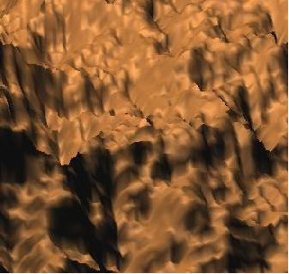

Hitman
Windows, PS4, XboxOne
Senior Programmer, Online and UI
IO Interactive, Copenhagen, Denmark
The sixth installment in the Hitman series.
Highlights:
- Scaleform integration and optimization, multithreaded rendering support
- Entity integration for authoring GUI
- Platform specific http library implementation
- Menu tech
- Map tech
- Scaleform Video integration, stream optimization and audio integration
- DLC / Entitlement / Bundle ownership and availability implementation
- Loading transition improvements
- Offline mode implementation
- Misc.
Hitman Absolution
Windows, PS3, Xbox360
Programmer, Engine
IO Interactive, Copenhagen, Denmark
The fifth installment in the Hitman series.
Highlights:
- Part of the engine team, responsible for improving and maintaining parts of Glacier 2
- Took ownership of audio tech towards the end of the project
- Memory optimization to fit audio budgets
- Audio streaming optimizations
- Minor UI optimizations
- Audio feature support
- Misc.

MediEvil Defence o' the Damned
PS3, PS Move
Student, 7 member team
University of Abertay, Dundee, Scotland
A comical take on Sony's MediEvil franchise developed by a group of students.
Highlights:
- PS3 Move integration
- Phyre engine integration of scene parsing and loading
- Dynamic shadows
- Misc.
DrainD
Windows, OpenNI, Kinect
Student, 6 member team
University of Abertay, Dundee, Scotland
A tunnel shooter prototype developed by a group of students.
Highlights:
- OpenNI integration
- Procedural level generation
- NVidia Physx integration
- Dynamic destruction of certain in level objects
- Implemented several gameplay features such as bullet time, progression systems etc.
- Menu system
- Specular and bump shaders in Ogre3D
- Misc.
Apox
Windows
Senior Programmer, Generalist
Bluegiant Interactive, Hyderabad, India
A post-apocalyptic, Mad-Max-esque online RTS.
Highlights:
- Various gameplay features and optimizations
- Multithreaded version of an existing Line of Sight algorithm
- Procedural map generation algorithms taking team balance and fairness into account
- Misc.
NCAA Basketball 09
Xbox360, PS3
Consultant
Electronic Arts, Burnaby, Canada
The 2008 installment to EA's college basketball simulator.
Highlights:
- General gameplay feature implementation
- Online achievements implementation
- Misc.
Multithreaded Water Wave Simulation
PS3
Senior Programmer, Gaming
Tata Elxsi, Bangalore, India
A simple sinusoidal water wave simulator using similar techniques to that of the terrain generator.
Highlights:
- PPU only implmentation
- Extended to use 6 SPUS and experimented with various techniques such as double buffered DMAs SIMDization, loop unrolling etc.
Multithreaded Fractal Terrain Generation
PS3
Senior Programmer, Gaming
Tata Elxsi, Bangalore, India
A multithreaded implementation of the diamond square algorithm on the Cell BE
Highlights:
- PPU only implmentation
- Extended to use 6 SPUS and experimented with various techniques such as double buffered DMAs SIMDization, loop unrolling etc.

Jan 08